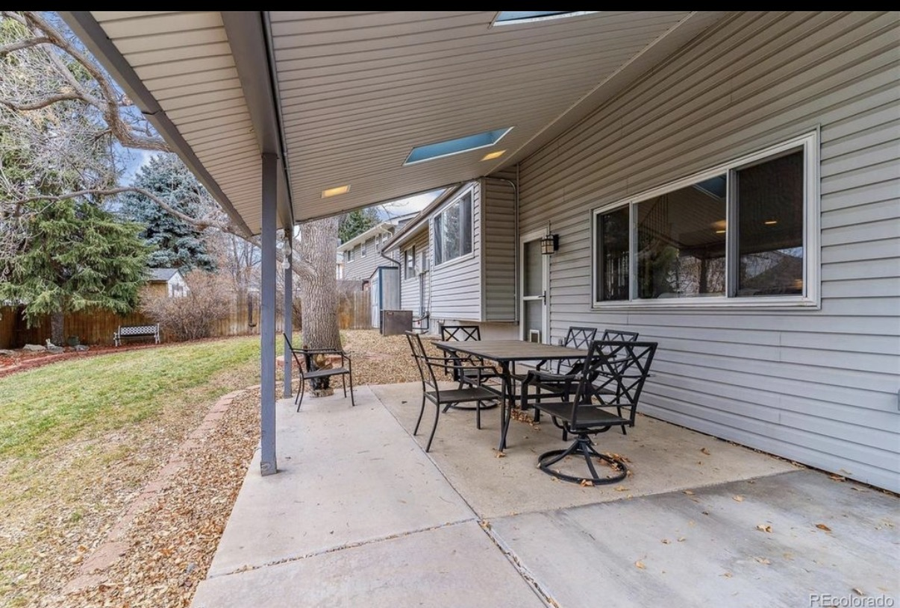
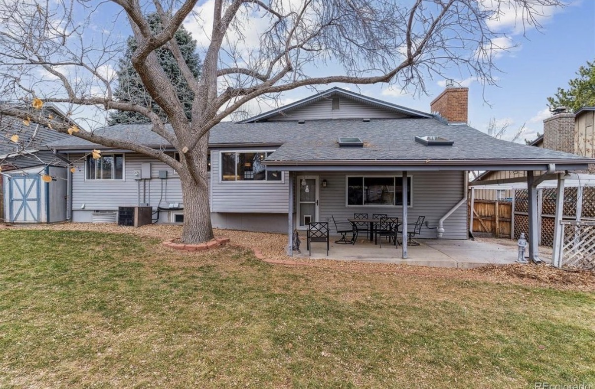
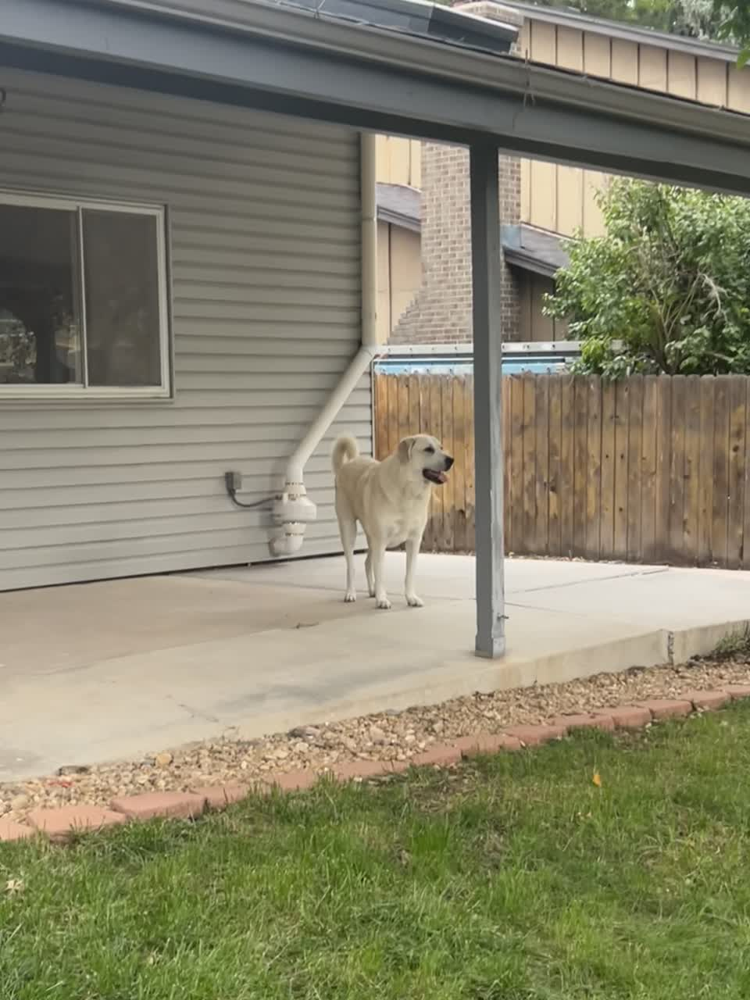

Two layout options for the back-of-house patio, built around your mature shade tree, a re-clad stucco-and-stone wall, and a matte-black attached Pergolux louvered roof. Foundational-phase scope, with the bigger moves flagged for later.
The brief
What you told me, captured so every drawing below traces back to it.
Decisions locked
Concrete: tear out & repour the full run along the back of the house; replace the side-yard slabs. Remove the rock/gravel bed + brick edging.
Shape: extend the patio into the yard with a soft kidney curve.
Overhead: awning comes down; matte-black attached Pergolux louvered pergola goes up in its place.
Wall finish: back-of-house re-clad in stucco + lighter stone (this side of the yard).
Zones: a dining area and a separate lounge area.
Budget:Foundational for now — keep it tight, leave hooks for phase 2.
Site notes & constraints
L-shaped split-level: patio sits in the inner corner; back wall steps with the levels, so the pergola ledger and stone wainscot get set to the lower-level wall line.
The big shade tree at the patio's outer edge stays — it's the best feature back there. We curve to it, keep concrete off the main roots, and use a permeable or floating edge near the trunk.
Utilities: AC/heat-pump units and the white radon/PVC pipe on the back wall need clear access — kept out of the stone field and pergola posts.
Doors: back storm door + side man-door both stay on clear concrete paths.
Left side (future): remove shed, push fence forward, add a gym pod — sketched in the master-plan section.
Existing conditions
Where we're starting from.

Existing aluminum awning + shallow L-shaped slab, tucked into the corner by the big tree.

The L-shaped ranch/split-level, mature canopy, shed at left, deep lawn.

Rock/gravel bed + brick edging at the lawn line (being removed), radon pipe on wall.
Material & color palette
Shared across both options — a light, warm wall against a crisp black frame.
Stucco fieldWarm off-white, fine sand finish
Light stoneStacked ledgestone wainscot
Matte blackPergola, posts, fixtures
ConcreteBroom finish, sawcut joints
Lawn / plantingTidied edge, layered beds
Warm wood accentOptional bench / screen slats
The look: a black Pergolux roof reads beautifully against a pale stucco wall with a stone base — it's exactly the modern-ranch contrast your dark window frames already hint at. Keeping concrete a warm light gray (not stark white) ties the floor to the stone.
The look & feel
Concept perspective of the wall + pergola + floor materials (shared by both options).
Stylized concept — not to scale. Black louvered Pergolux roof, pale stucco wall with a stone wainscot, warm broom-finished concrete, dining + lounge zones, and the existing shade tree anchoring the kidney edge.
Option A — “The Soft Kidney”
One continuous spaceSimplest pourMost lawn keptBest value
A single sweeping kidney that widens out from under the pergola toward the tree. Dining sits under the louvered roof against the wall; the lounge spills out onto the bulge in the open air, half-shaded by the canopy. One clean curve = the most economical formwork and the least lawn lost — ideal for the foundational phase.
Option A render — one continuous sweeping kidney: dining under the black louvered roof, lounge spilling onto the open bulge under the tree. Stylized, not to scale.
Option A — plan view (stylized, ~to scale).
Why it works
One pour, one curve — lowest formwork cost, fastest install.
Dining stays dry/shaded under the louvers right by the kitchen door.
Lounge sits under the natural canopy — cooler in summer, great for the foundational budget (no extra structure).
Keeps the most lawn for the dog and yard games.
Curve pulls up to the tree but holds concrete ~3–4 ft off the trunk; that gap becomes a mulched/groundcover root zone so we don't suffocate the roots.
Rough dimensions
Element
Approx.
Concrete along house (band)
~46 ft × 10 ft
Kidney bulge (deepest)
+8–10 ft into yard
Pergola (attached)
~20 ft × 12 ft
Total new patio
~620–680 sq ft
Trade-off: zones share one space — less "separate room" feel than Option B.
Option B — “Two-Zone Sweep”
Two defined roomsDestination loungePhase-2 ready
A peanut-shaped kidney: dining stays tucked under the pergola against the wall, then the concrete necks down to a wide walk and opens into a separate circular lounge node set out near the tree — a true second "outdoor room." This is the layout that grows best later (the lounge circle is the natural spot to drop a fire feature or seat-wall in phase 2).
Option B render — two outdoor rooms: dining under the pergola at the wall, a separate circular lounge node (shown fire-ready) set out by the tree, joined by a wide walk. Stylized, not to scale.
Option B — plan view (stylized, ~to scale).
Why it works
Two genuinely separate "rooms" — dining by the door, lounge as a destination you walk out to.
The lounge circle is pre-shaped for a future fire pit, seat-wall, or even a small spa pad — your phase-2 hooks.
Wraps the tree on two sides, making it the centerpiece of the lounge.
More visual interest and "designed" feel from the curves.
Rough dimensions
Element
Approx.
Concrete along house (band)
~46 ft × 10 ft
Connecting walk
~6 ft wide
Lounge node
~13 ft circle
Pergola (attached)
~20 ft × 11 ft
Total new patio
~720–800 sq ft
Trade-off: more concrete & more complex formwork = higher cost than A; takes a bit more lawn.
Quick comparison
Option A · Soft Kidney
Option B · Two-Zone Sweep
Feel
One relaxed, open space
Two distinct outdoor rooms
New concrete
~620–680 sq ft
~720–800 sq ft
Relative cost
$ (lowest)
$$ (more forming + area)
Lawn kept
Most
Slightly less
Phase-2 upside
Good
Best (lounge node ready for fire feature)
Best if you want…
Simple, budget-first, max yard
A "designed," room-to-room backyard
My recommendation for the foundational phase: start with Option A's single kidney but pour the lawn-side edge on the curve from Option B near the tree. You get the lowest cost now, and if you later want the separate lounge node, you extend off that curve without ripping anything out.
Master plan — left side (future phase)
Noting your bigger moves so today's patio doesn't box them out: remove the shed, push the fence forward, add a gym pod.
Left-side concept — not built in the foundational phase, shown so the patio and grading leave room for it.
How it connects
Gym pod: a prefab garden studio works great here — finish it in black to rhyme with the pergola, with a stone or stucco accent to echo the house. Site it on the old shed pad area for easy utility runs.
Fence push: moving the fence forward reclaims a usable side strip — keep a clear path from the side man-door past the gym pod to the patio.
Today's hook: when we pour the side-yard slabs, we'll stub a path and leave a clean edge where the gym-pod walk will tie in later — no demo to redo.
Utilities: if the pod needs power (it will), drop a conduit sleeve under the new side concrete now while it's open. Cheap insurance.
Gym pods need a level pad + drainage; the existing shed footprint is the lowest-cost spot since it's already cleared and flat-ish.
Planting palette (Front Range / Zone 5)
Low-water, deer-tolerant, and happy in your dappled shade — replacing the removed rock bed with living edges.
Wall-base beds (shade)
Hosta + heuchera (coral bells)
Astilbe for soft height
Hardy ferns under the tree
Kidney edge (sun/part-sun)
Karl Foerster feather reed grass
Catmint + Russian sage (low water)
Coneflower / black-eyed Susan
Structure / privacy
Dwarf conifers to echo the spruce
Boxwood for clean evergreen mass
Serviceberry as an understory accent
Keep new beds out of the tree's critical root zone — groundcover + mulch only within ~4 ft of the trunk; no tilling or raised soil over the roots.
Scope & phasing
Phase
Scope
Notes
Foundational (now)
Demo awning + old concrete + rock bed · grade · pour new patio (Option A or B) + side slabs · stucco & stone re-clad on back wall · attached matte-black Pergolux · tidy planting edges · conduit sleeve stub for future pod
The core of your budget. Get the structure & concrete right once.
Phase 2
Fire feature / seat-wall in the lounge node · landscape lighting · fuller planting · gas line
Drops onto Option B's lounge circle with no rework.
Phase 3
Remove shed · push fence forward · gym pod + walk + power
Left-side master plan; pad reuses cleared shed footprint.
Before construction: ① confirm pergola post locations clear the AC/radon pipe; ② have an arborist flag the tree's root zone before the kidney curve is staked; ③ check setback/permit needs for the attached pergola (most jurisdictions require a permit for an attached structure) and later for the gym pod.